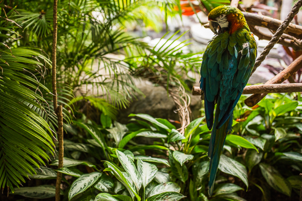

The last time Adam and I had been to Hawaii, we were 2 and 4. Between the two of us I’m the only one that remembers anything about the trip, and that memory was of me crying because the wind smacked my 4 year old face with sand. With the bar set so low, our parents, mainly mom, was ready to bring us on a trip down memory lane and create some new memories.
Hilton Hawaiian Village
Living simply is something Adam and I really take pride in. We don’t require much: food, water, occasional wifi, a place to sleep, and we’re pretty happy. The Hilton Hawaiian Village was something a bit grander than what we’re accustomed to and it’s also the place we stayed 22 years ago when we were in Hawaii with our parents and grandparents for a business conference our dad was attending.

We stayed there again during our first few days in Hawaii and our mom made it a point to show us where hula girls draped lei’s around us, show us the parrots that perched on our grandparents’ shoulders, koi ponds we’d make everyone visit any time we went outside, and the spot where wind smacked me in the face.
Pearl Harbor
A trip to Oahu wouldn’t be complete without a stop at Pearl Harbor, and we wanted to get stamps! We’ve read in textbooks about the tragic attack on Pearl Harbor on December 7, 1942, but it’s all really put into perspective when you’re there. There’s only so much a textbook can tell you, but being there really sheds a new light on everything, especially when you learn about how Pearl Harbor is also the burial ground for so many soldiers lost that day. While we waited for our timeslot to visit the USS Arizona Memorial, we took a walk around harbor, saw the torpedo garden, read about all the U Boats that were lost during World War II, and walked through the museums.
Honolulu Zoo
Our mom loves walking around a zoo, seeing and learning about all the animals. She even has a pass for the zoo close to where her and our dad live in Florida. Her and our grandparents took us to the Honolulu Zoo last time and our only recollection of it is a picture of a crap load of pigeons swarming around our granddad, him laughing at the whole situation. Where else can you see elephants, lions, and penguins on an island and have a baboon come and pose for you on the other side of the glass?
Waikiki Beach
The winter is when all the big swells collide into the North Shore, leaving the South Shore with smaller waves. While the North Shore is known as the proving ground, the South Shore is a longboarder’s paradise. Since the 3 of us guys are longboarders at heart, we took full advantage of the gentle waves the South Shore gave us. While the waves weren’t ideal, we all saw potential for some great rides as we had a blast sharing waves with our dad right out in front of the hotel.
On our last day on the South Shore we made a pitstop at Queens Beach to see the Duke Kahanamoku statue. The Duke was a Native Hawaiian competitor who popularized the ancient Hawaiian art of surfing. Without him, surfing may not be as mainstream as it is today.